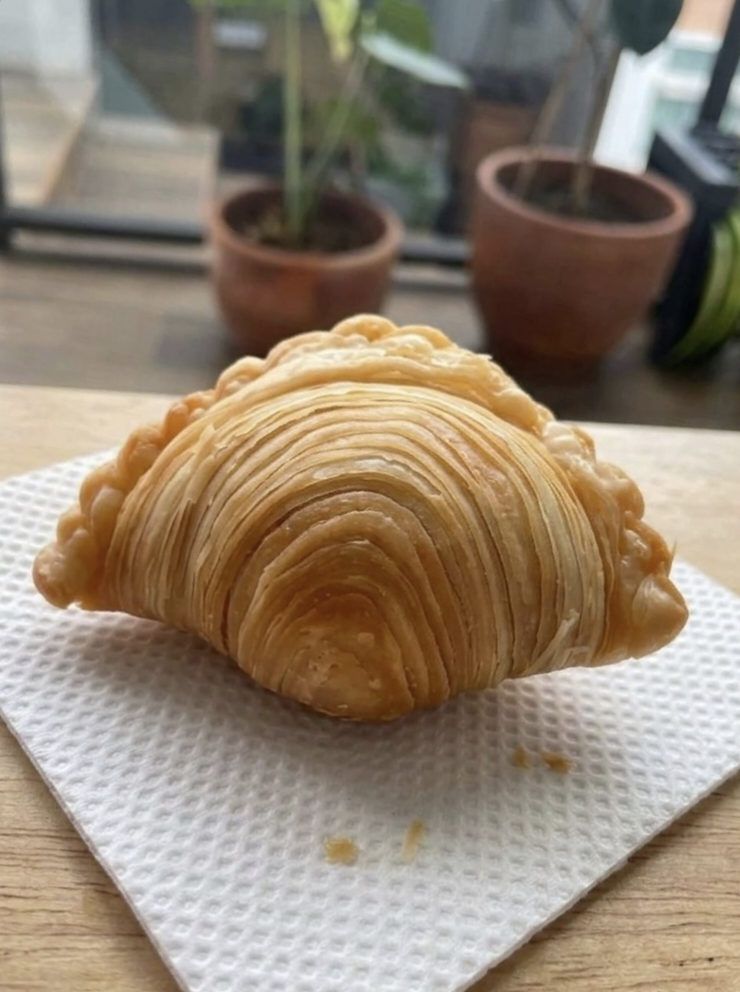

BUKAN SEKADAR KARIPAP
Kami percaya camilan sederhana bisa dibuat dengan lebih serius. Setiap karipap dibuat dengan perhatian pada tekstur, rasa, dan pengalaman di setiap gigitan.
Karipap pusing dengan lapisan flaky yang renyah dan isian gurih yang bikin satu aja nggak cukup.

Siap jatuh cinta sama lapisannya?
Lapisan renyah yang bikin susah berhenti. Karipap pusing dengan kulit berlapis yang flaky dan crispy di luar, namun tetap lembut di dalam. Setiap gigitan dipenuhi isian gurih ayam dan kentang berbumbu yang dibuat untuk jadi teman ngemil kapan saja. Dibuat dengan teknik pusing untuk menghasilkan lapisan kulit yang cantik dan tekstur yang khas—kokoh saat digigit, renyah saat dimakan, dan tetap nikmat sampai gigitan terakhir. Currylicious — sekali gigit, langsung paham bedanya.
Kami percaya camilan sederhana bisa dibuat dengan lebih serius. Setiap karipap dibuat dengan perhatian pada tekstur, rasa, dan pengalaman di setiap gigitan.
Kulit berlapis dengan sensasi crispy dan flaky menjadi karakter utama Currylicious. Bukan sekadar renyah, tapi punya tekstur yang terasa saat digigit.
Cocok untuk menemani waktu santai, teman minum teh atau kopi, bekal, maupun sekadar mengganjal lapar di tengah kesibukan.
Dari kulit hingga isian, semuanya dirancang agar satu karipap terasa cukup memuaskan—namun tetap bikin ingin mengambil satu lagi. Currylicious — comfort food dengan lapisan yang bikin jatuh cinta.
"Kulit pusingnya beneran flaky banget! Pas digigit renyah krispi, isian rempah ayam kentangnya melimpah dan gurihnya pas. Beli satu porsi langsung habis sendiri!"
"Cocok banget buat teman ngopi sore. Tetap krispi walau udah agak dingin, isian karinya wangi dan nggak pelit. Fix bakal order langganan!"
"Beda banget sama karipap biasa. Lapisan kulitnya cantik dan pas digigit kerasa banget bedanya. Sekali coba Currylicious langsung paham kenapa dinamain gitu."
Dapatkan Karipap Pusing Currylicious hangat langsung dikirim ke tempat Anda. Stok harian terbatas untuk menjaga kualitas kerenyahan!